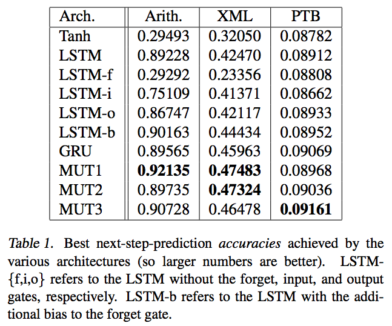
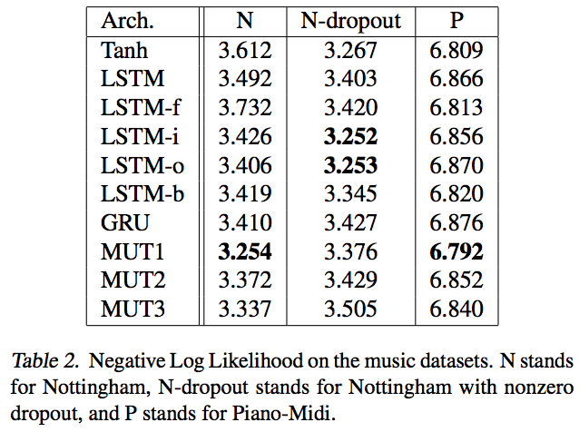
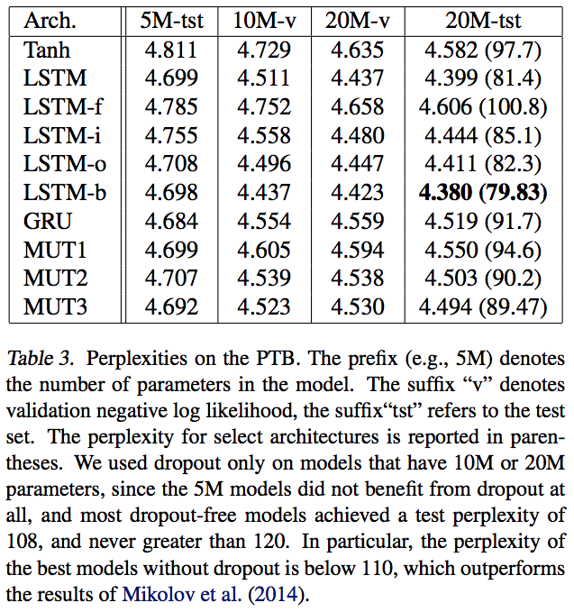

An Empirical Exploration of RNN Architectures
Updated:
Rafal Jozefowicz et al.[1] explored several RNN architectures and evaluated them empirically. They identified several architectures (GRU variants) that outperforms both the LSTM and GRU on some tasks. They found adding a bias of 1 to the LSTM’s forget gate closes the gap between the LSTM and GRU.
The Search Procedure
First, the architecture is used to solve a simple memorization problem (read sequences and then reproduce them). architectures with teacher forcing achieving below 95% performance are discarded. Secondly, architecures are required to reach 90% performace of the GRU’s best performance on 3 tasks (Arithmetic, XML modelling, Penn Tree-Bank). To measure the generalization ability of architecures, Music datasets are also used.
Datasets
Arithmetic
In this problem, the RNN is required to compute the digits of the sum or difference of two numbers, where it first reads the sequence which has the two arguments, and then emits their sum, one character at a time.
XML modelling
The goal of this problem is to predict the next character in synthetic XML dataset.
Penn Tree-Bank
A word-level language modelling task on the Penn TreeBank following the precise setup of [4], which has 1M words with a vocabulary of size 10,000.
Music
RNNs were required to predict binary vectors representing the notes played at a given timestep.
Results
In this paper all best architectures are GRU varients. The results are showed in Table 1, 2 and 3.



About LSTM
Resist Vanishing Gradient Problem
- The use of powerful second-order optimization algorithms.
- Regularization of the RNN’s weights.
- Giving up on learning the recurrent weights altogether.
- Very careful initialization of RNN’s parameters.
- The use of LSTM.
LSTM’s Trick
Let $S_{t}$ denote a hidden state at timestep t. The LSTM directly computes $\delta S_{t}$, which is then added to $S_{t-1}$ to obtain $S_{t}$ instead of computing $S_{t}$ from $S_{t-1}$ with a matrix-vector product followed by a nonlinearity. Concretely, given that $S_{1000} = \sum_{t=1}^{1000}\delta S_{t}$, every single $\delta S_{t}$ will receive a sizeable contribution from the gradient at timestep 1000.
Ablation on LSTM
- Forget gate is extremely significant on all problems except language modelling(supported by [2]).
- Input gate is the second most important.
- Output gate is unimportant(supported by [3]).
References
[1] Rafal Jozefowicz et al. An Empirical Exploration of Recurrent Network Architectures. 2015
[2] Mikolov et al. Learning longer memory in recurrent neural networks. 2014
[3] Shuohang Wang et al. MACHINE COMPREHENSION USING MATCH-LSTM AND ANSWER POINTER. 2016
[4] Mikolov Tomas et al. Recurrent neural network based language model. 2010
Appendix
Here we review the forward and backpropagation processes of LSTM. Let’s consider the simplest case, one layer LSTM, the forward process at time step t is:
$$\begin{eqnarray}
\vec{\tilde{C}}_t = \mbox{tanh}(W_c\vec{x}_t + U_c\vec{h}_{t-1} + \vec{b}_c) \\
\vec{f}_t = \sigma(W_f\vec{x}_t + U_f\vec{h}_{t-1} + \vec{b}_f) \\
\vec{i}_t = \sigma(W_i\vec{x}_t + U_i\vec{h}_{t-1} + \vec{b}_i) \\
\vec{C}_t = \vec{f}_t \oplus \vec{C}_{t-1} + \vec{i}_t \oplus \vec{\tilde{C}}_t \\
\vec{o}_t = \sigma(W_o\vec{x}_t + U_o\vec{h}_{t-1} + \vec{b}_o) \\
\vec{h}_t = \vec{o}_t \oplus \mbox{tanh}(\vec{C}_t)
\end{eqnarray}$$
Next, we calculate the gradient $\frac{dh_t}{dh_{t-1}}$ via back propagation. From (6), we get
$$\begin{eqnarray}
\frac{d\vec{h}_t}{d\vec{o}_t} = \mbox{tanh}(\vec{C}_t) \\
\frac{d\vec{h}_t}{d\vec{C}_t} = \vec{o}_t \oplus (1- \mbox{tanh}^2(\vec{C}_t)) \\
\end{eqnarray}$$
From (5) (3) (2), we get
$$\begin{eqnarray}
\frac{d\vec{o}_t}{d\vec{h}_{t-1}} = ((1-\vec{o}_t)\oplus\vec{o}_t) \oplus U_o \\
\frac{d\vec{i}_t}{d\vec{h}_{t-1}} = ((1-\vec{i}_t)\oplus\vec{i}_t) \oplus U_i \\
\frac{d\vec{f}_t}{d\vec{h}_{t-1}} = ((1-\vec{f}_t)\oplus\vec{f}_t) \oplus U_f \\
\end{eqnarray}$$
From (4), we obtain
$$\begin{eqnarray}
\frac{d\vec{C}_t}{d\vec{f}_{t}} = \vec{C}_{t-1} \\
\frac{d\vec{C}_t}{d\vec{i}_{t}} = \vec{\tilde{C}}_t \\
\frac{d\vec{C}_t}{d\vec{C}_{t-1}} = \vec{f}_t \\
\end{eqnarray}$$
From (1) we obtain
$$\begin{eqnarray}
\frac{d\vec{\tilde{C}}_t}{d\vec{h}_{t-1}} = (1-\mbox{tanh}^2(\vec{\tilde{C}}_t)) \oplus U_c
\end{eqnarray}$$
Based on (1) ~ (6), we have
$$
\frac{dh_t}{dh_{t-1}} = \frac{d\vec{h}_t}{d\vec{o}_t}\frac{d\vec{f}_t}{d\vec{h}_{t-1}} + \frac{d\vec{h}_t}{d\vec{C}_t}(\frac{d\vec{C}_t}{d\vec{f}_{t}}\frac{d\vec{f}_t}{d\vec{h}_{t-1}} + \frac{d\vec{C}_t}{d\vec{i}_{t}}\frac{d\vec{i}_t}{d\vec{h}_{t-1}} + \frac{d\vec{C}_t}{d\vec{\tilde{C}}_t}\frac{d\vec{\tilde{C}}_t}{d\vec{h}_{t-1}})
$$